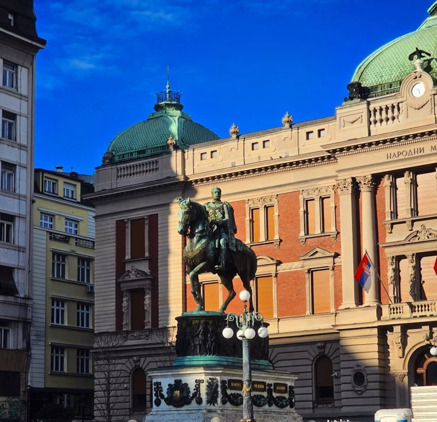

Beograd, mesto po mesto

Ovo su mesta koja godinama šaljem prijateljima u porukama kad dođu u Beograd: gde na doručak, koja kafana, gde gledati zalazak nad Savom i gde izaći kad padne mrak. Ništa ovde nije plaćeno. Svako mesto sam lično probao i uz svako ti ostavljam svoj savet.
Ne. Na listi su samo mesta u koja i sam idem i koja bih preporučio prijatelju.
Klikni + na kartici mesta. Sačuvana mesta nađeš pod „Moja lista“. Lista ostaje u tvom browseru na ovom uređaju.
Kasno proleće i rana jesen. Leti je toplo i grad živi na rekama i splavovima, a zimi su kafane najlepše.
Centar se lako obilazi peške. Za Zemun, Adu i Novi Beograd uzmi taksi preko aplikacije ili gradski prevoz.
Naravno. Piši mi na Instagramu, rado probam nova mesta.
Nema mesta za ovaj izbor.
Rođen sam i živim u Beogradu. Volim dobru kafu ujutru, dug ručak u kafani i šetnju kejom kad sunce zalazi. Ovaj vodič je moj način da ti pokažem grad onako kako ga ja vidim.